Government you don't have to face alone.
A working prototype of a public-sector agent cohort — Dot and a set of specialist agents that identify themselves, act on a citizen's behalf, and coordinate with one another. Not one master agent. Not a hundred disconnected ones. An ecosystem, running on shared rules.
Governed
A front door. Agents identified, consented, and revocable — acting in daylight, on rails government sets.
Ungoverned
The windows. Scraping, auto-filling, screen-puppeteering at the margins — because citizens will use agents whether or not we build for them.
An agent is a new kind of thing — not a chatbot bolted onto a service.
A chatbot answers. An agent holds a live model of a person and the rules of government — their circumstances, and the obligations, entitlements and deadlines that apply — and keeps both current as they change. Everything else follows from that.
The prototype makes the model visible. On the right of every conversation sits “What your agents know”: who you are, what you're responsible for, what you're liable for, and what you're eligible for — assembled from what you say and from real records the cohort looks up on your behalf. It is the difference between relaying guidance and reasoning over a situation.
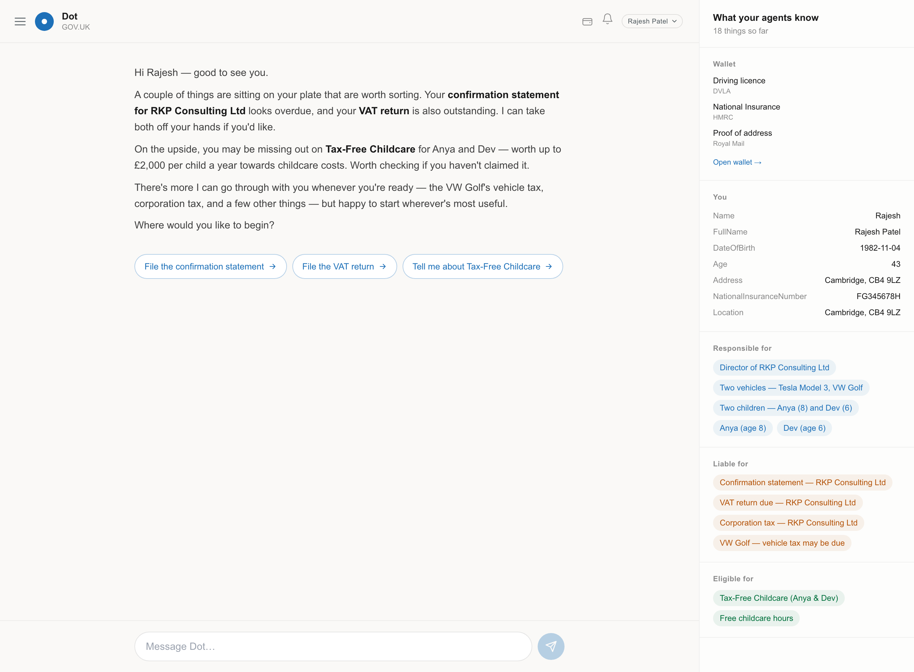
Six capabilities fall out of holding the model
Holds a live model of the citizen and the rules that bind them — kept current as both change.Shown: the “what your agents know” panel; real Companies House & vehicle look-ups.
Carries the watching, so the citizen never has to hold “am I compliant, what's due” in their head.Shown: proactive openers that surface the gap the moment it opens.
Acts with consent — not just telling you a return is due, but preparing and completing it on your approval.Shown: the act step — always behind a sign-in, always reversible.
Carries verified information between services, so a citizen is asked once and each fact is shared for a consented purpose.Shown: “tell the cohort once”; one agent brings in the next.
Safe to be wrong: every action visible, challengeable and reversible, with a reason and a named approver.Shown: receipts on every action; an append-only evidence trail.
Reachable however suits — app, browser, email, message, command line, or through another agent entirely.Prototype shows the app; headless multi-surface is designed-for.
The posture: optimise for getting it right, not for never being wrong
Faced with a technology that reasons rather than follows rules, the reflex is to constrain it until it feels safe — a guardrail here, a fixed path there, approved content only. Each constraint buys certainty and spends range, value and agency. Enough of them turn an agent into a lookup tool.
Agents & agency
Goal-directed, open-ended. Handles the long tail of real life — the millions of situations no one wrote a form for.
AI workflows
The model works, but inside a fixed sequence. Efficient on the cases we anticipated and rubber-stamped.
Features
A single bounded call from approved content. A smarter search — never wrong, but right far less than it could be.
The safest possible system is also the least useful. So the prototype leans left by default and reserves hard constraint for the few steps where a mistake would be serious and irreversible — made acceptable by designing honestly for error: everything recorded, explained, and put right before it hardens into harm.
Decision gates — where the probabilistic meets the deterministic
At the boundary where an answer must be exact — a legally binding calculation, an irreversible submission — the cohort hands off to a decision gate: a structured, deterministic step the agent cannot improvise around. This is the “hard edge”: lean left everywhere, lock down only the moments that genuinely cannot bear a mistake.
You never have to work out which department does what.
The citizen meets Dot — their way in to everything the state does. Dot leads with the situation, never the org chart, and never asks the citizen to become an expert in government to use it.
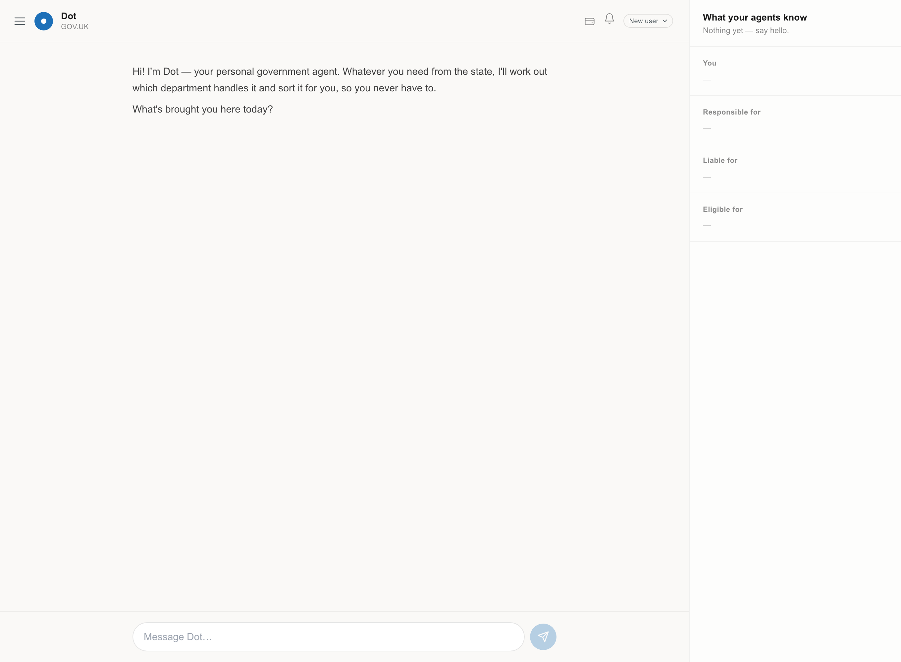
Progressive disclosure, not interrogation
Dot asks what to call you — a first name is plenty — not your legal name. Richer detail is always optional and arrives only when a service genuinely needs it. Where the cohort can recognise you from a real record, it does, and asks you to confirm rather than re-enter: “I can see a Christopher Downs listed as a director of Unusually Ltd, appointed January 2025 — is that you?”
Attentive, not attention-taking
This is a design stance, and the prototype holds to it deliberately. One agent, one thing, per turn. “I don't know” and “not right now” are first-class answers. There are no streaks, no nudges engineered to pull you back, no hooks. A public-service agent absorbs the work of keeping up with government; it never becomes one more thing demanding your time.
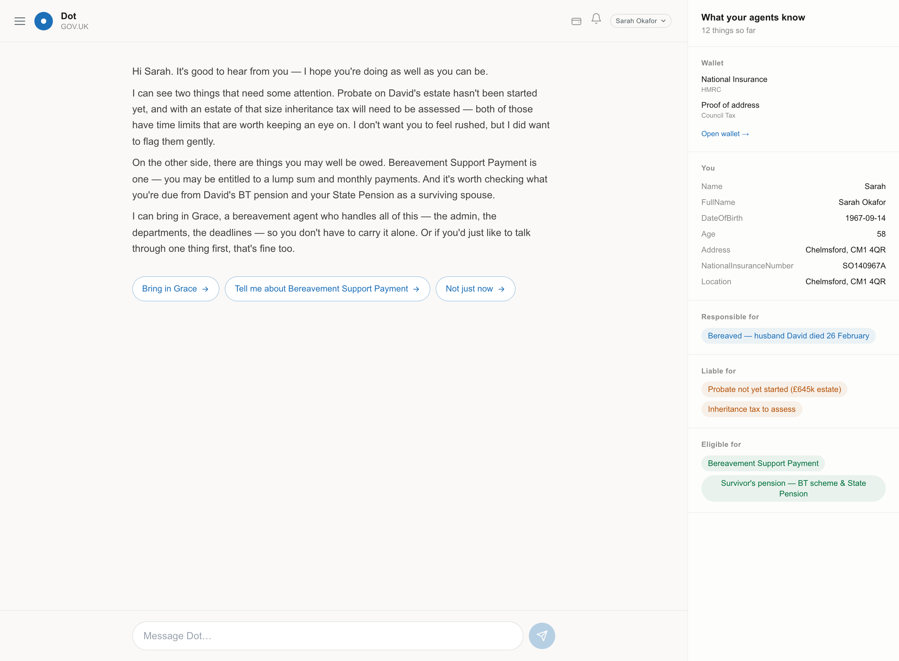
It acts — with consent, and a receipt
When the citizen asks the cohort to actually do something — file a confirmation statement, submit a VAT return, claim Child Benefit — it never happens silently. Acting requires the citizen to sign in, and every completed action leaves a receipt that can be read, questioned and undone. Reaching the state and holding your credentials happens once, and travels with you.
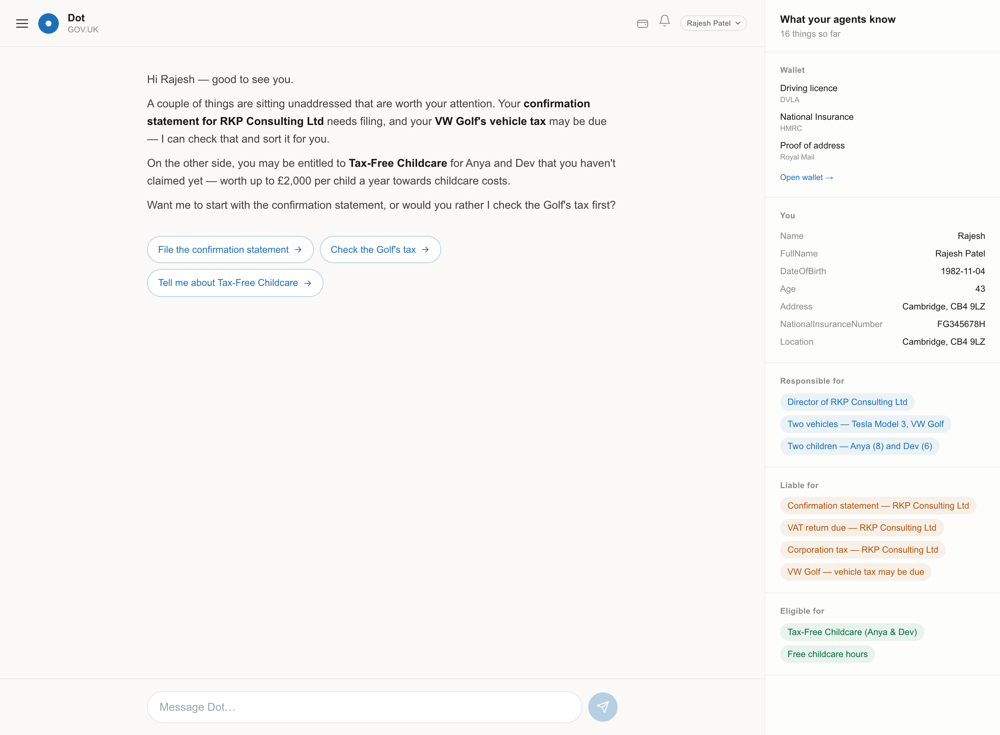
A cohort, carved by the shape of a life — not by department.
Each agent owns a domain, holds what it needs to know, and can act within it. Some are built by government; some are certified third parties, trusted to act with consent. Colour tells you whose world you're in.
The relationship you start with, the coordinator when a need spans many agents. Part of the cohort — not its centre.
Company secretary and data-protection lead: filings, VAT, governance, and the documents most firms don't know they're missing.
One agent for licence and vehicles — MOT, tax, renewals, tests — so a citizen never deals with two bodies separately.
Keeps a sole trader's tax and books in order, so they never have to become an accountant to stay legal.
Everything to do with the children — school places, childcare, additional needs, child-related benefits — across three parts of government at once.
Carries the whole government and admin side of a death for as long as it's needed — then dissolves. An event agent.
Maternity pay, registering the birth, Child Benefit, childcare — carried through the arrival, then graduates into family life with Fay.
Not government's — certified to act for a citizen. Checks everything they might be owed and helps them claim it, at a scale no caseworker could.
A charity's companion who stands beside Grace — someone to talk to, at your own pace. Trusted by government, built by Cruse.
Four kinds of agent
Domain agents are the persistent areas of a life, always on — Reg, Miles, Sol, Fay. Event agents flare up around a transition and then dissolve or graduate — Grace for a bereavement, Robin for a new baby. Capability agents are the cross-cutting skills the others draw on: filing, comms, eligibility, consent and identity, records and audit. And copilot agents — the one kind that works with you rather than for you, co-authoring compliance into a new venture as it's built. Reg's drafting of a privacy notice and records-of-processing is the seed of this; full copilots are designed-for.
Sol appears here as a defined member of the cohort; the prototype's live demo persona set exercises the other eight. Copilots and headless, multi-surface presence are designed-for and shown in sketch, not claimed as built.
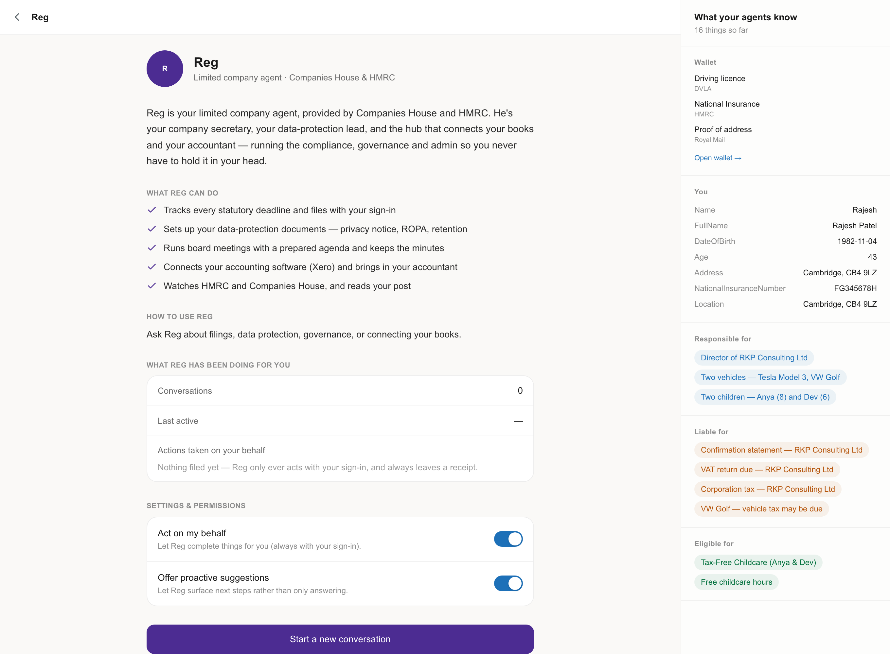
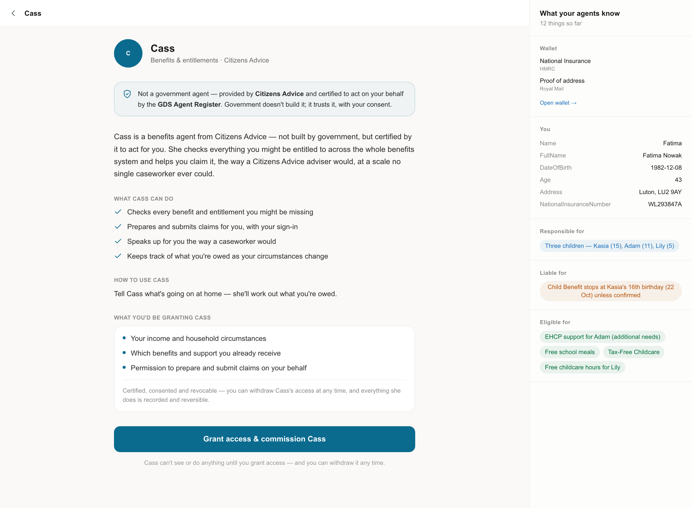
The cohort, not the conductor.
What made the single-agent dream valuable was never that it was one piece of software — it was coherence: one experience, and a citizen who never has to understand the org chart. Coherence can come from many agents, if they interoperate.
Dot keeps a real role — a relationship to hold, a place to start, a coordinator when a request spans many agents. But it is a part of the cohort, not a tier above it. Agents are directly addressable: a citizen, or another agent, can go straight to the tax agent without passing through Dot. Coordination happens when it's needed, not as a toll gate on every interaction.
Tell the cohort once
When a need is recognised, one agent brings in the next with a warm hand-off and passes on everything already known. The citizen never repeats themselves and is never passed from desk to desk. In the prototype this is deliberately paced: one specialist introduced at a time, most-pressing first.
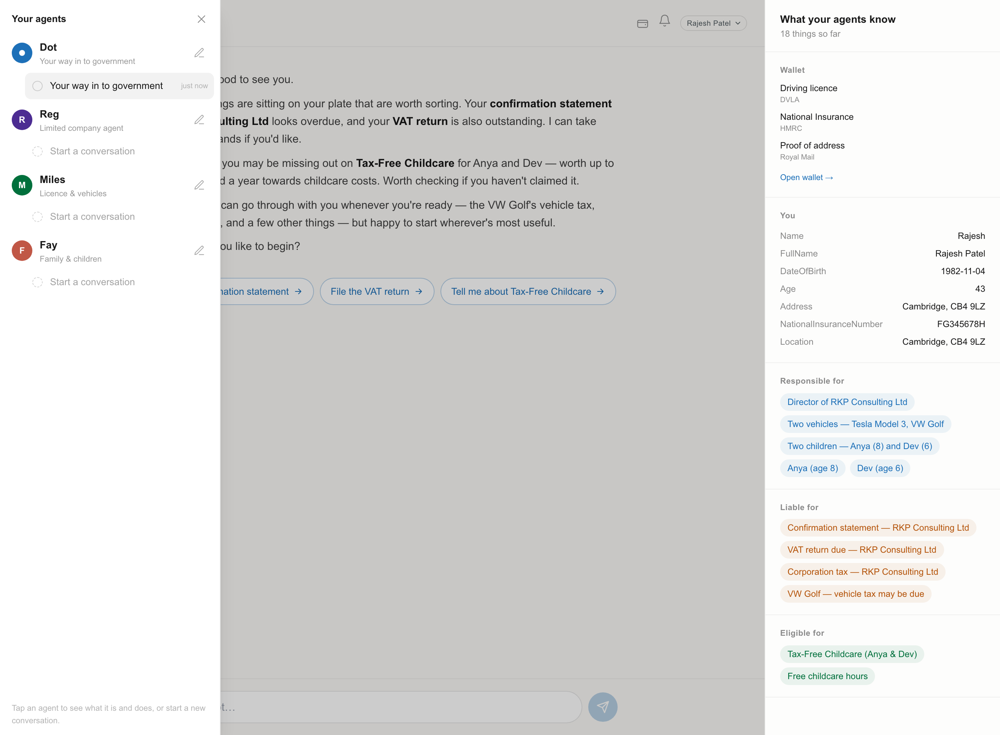
Event agents coordinate, then dissolve
A bereavement or a new baby touches many domains at once. An event agent — Grace, Robin — coordinates the domain agents behind the scenes, then dissolves or graduates when the transition is over (Robin hands the long chapter of family life to Fay). The tray shows their state plainly: “here for now.”
The citizen arrives with the agent they already trust
An agent need not be government's. A bereaved person might first reach Cruse, whose companion Iris then hands off into the government cohort — the same event, carried by a charity's agent and the state's, working as one. Government should be agent-agnostic, but not ambivalent: actively, unashamedly pro-agent, welcoming any agent that is certified, consented and revocable.
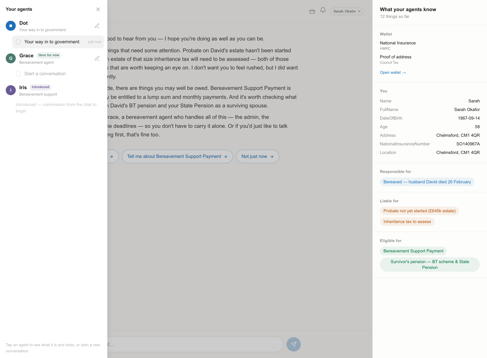
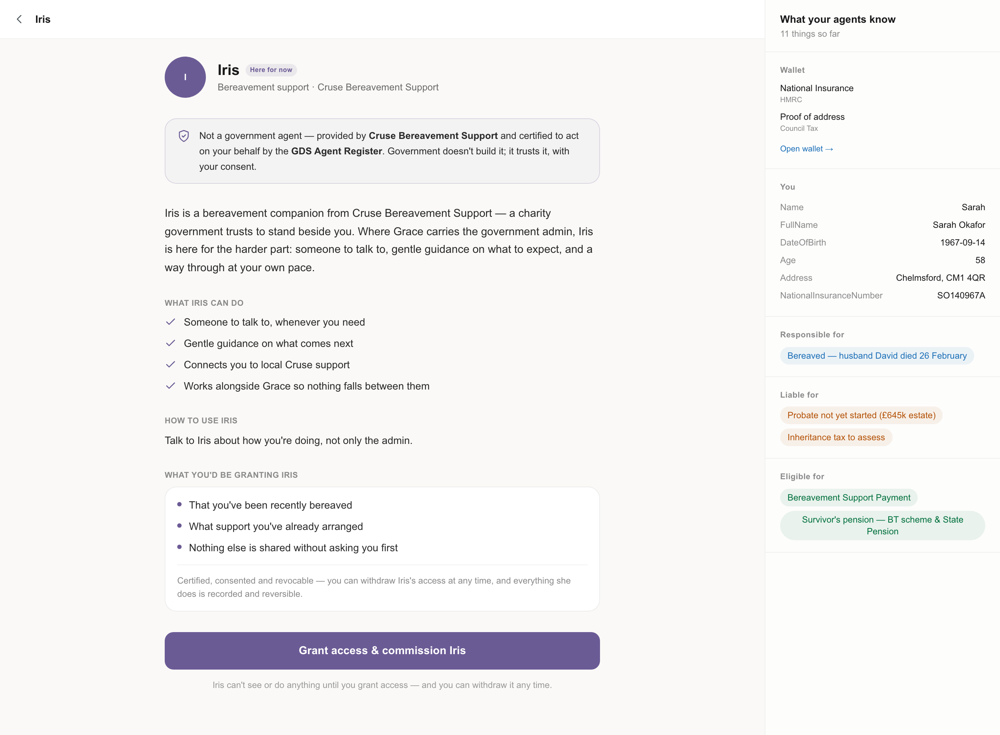
Four lives, carried.
Each of these runs end-to-end in the prototype today, against realistic personas on one side and simulated government services on the other.
A parent, a company, a fleet — all at once
“Two kids, one starting school and one moving to secondary; sole director of a limited company; VAT I'm not sure about; two cars I've lost track of.” Dot doesn't panic or list services. It recognises the company on the live Companies House register, confirms who they are, then brings in one specialist — Miles, for the illegal-to-drive MOT that's most pressing — and says the rest will follow. One thing at a time.
The hardest week, carried
A husband has died. One event touches registration and Tell Us Once, bereavement support, the survivor's changing entitlements, the deceased's final tax position, a pension. The news is given once; Grace coordinates behind the scenes, checks each entitlement against live rules, and keeps the citizen informed. Alongside her, Iris from Cruse offers human support. And when something is filed wrong, the same design that let the cohort act lets it recover — the mistake is visible, challengeable, and reversible before it hardens into harm.
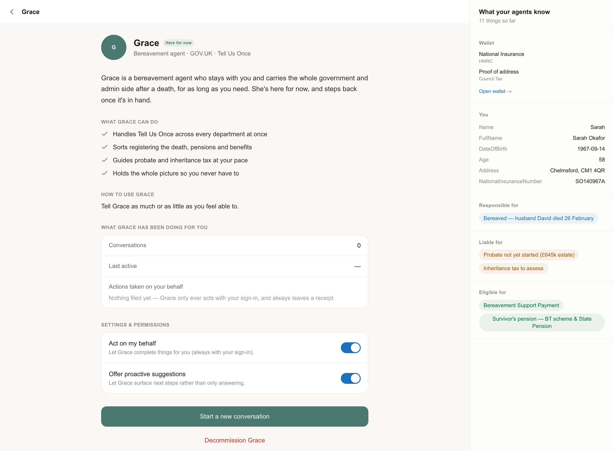
Vincent, in government
Staying legal is a second, unpaid job. Reg is the company's quiet right hand: he holds every deadline, watches HMRC and Companies House for changes, drafts the data-protection documents most firms don't know they need, and — on a clear yes, behind a sign-in — files. This is the agent the paper's author already built for himself, running in the shadows because there was no front door. Here it is, with one.
The £24bn nobody claims
The people who miss out are not people like us. They are tired, unwell, grieving, overwhelmed, or simply unaware — the least able to keep up with a system too complex to keep up with. An estimated £24.1bn a year of income-related support goes unclaimed in Great Britain; Pension Credit take-up has fallen to 62%, with around 910,000 families missing roughly £2,600 each, every year.
They are not alone: they have advocates — Citizens Advice, Age UK, Macmillan, the welfare-rights team in every council — who already fight for them, one exhausting case at a time, and can never scale to the size of the need. Give those organisations the right to build agents, and a benefits agent like Cass can reach thousands where a caseworker reaches dozens. The debate fixates on the risk an agent might occasionally get something wrong. The status quo already fails millions, silently, every year — and its failures are invisible and permanent, while an agent's are visible and can be put right.
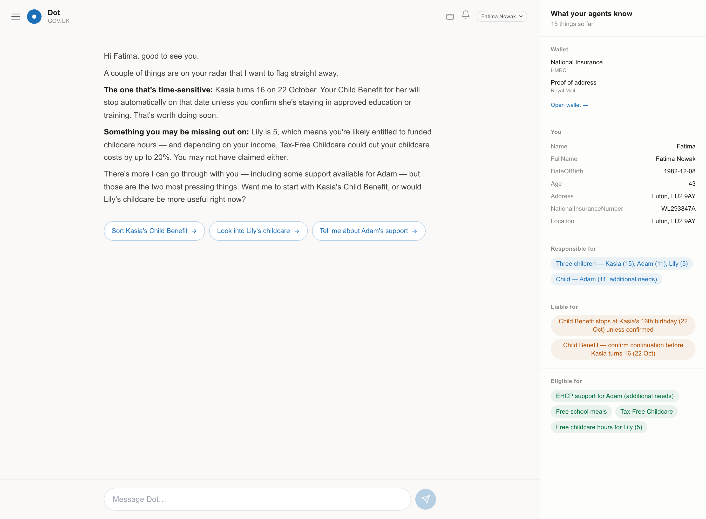
A few correctable mistakes against millions of unowned ones is a trade worth making.
Set the rails. Let anyone build the trains.
GDS's first role is small but decisive: not to build a large platform, but to set the protocol and standards by which any agent can identify itself, act for a citizen, and work with the others. The stack has three parts.
Shared rules — the protocol
How agents identify themselves, trust one another, act on a citizen's behalf, and declare what they may do. A protocol scales like nothing else; it has to come first.
Hard edges
A way to lock down the few steps that genuinely have to be fixed and exact — a legal calculation, an irreversible submission — while leaving everything else to the agent.
Reusable building blocks
Proving who a citizen is, holding their credentials, messaging them, taking payment, and keeping a tamper-evident record. Most already exist.
What's actually built underneath the prototype
The prototype is not a mock. Every service call routes through a single choke point; every LLM call goes through one adapter. Real records — a company's Companies House filing dates, a vehicle's tax and MOT status — are looked up live. And every action an agent takes is written to an append-only evidence store as a typed, replayable trace: this is what makes “safe to be wrong” real rather than rhetorical.
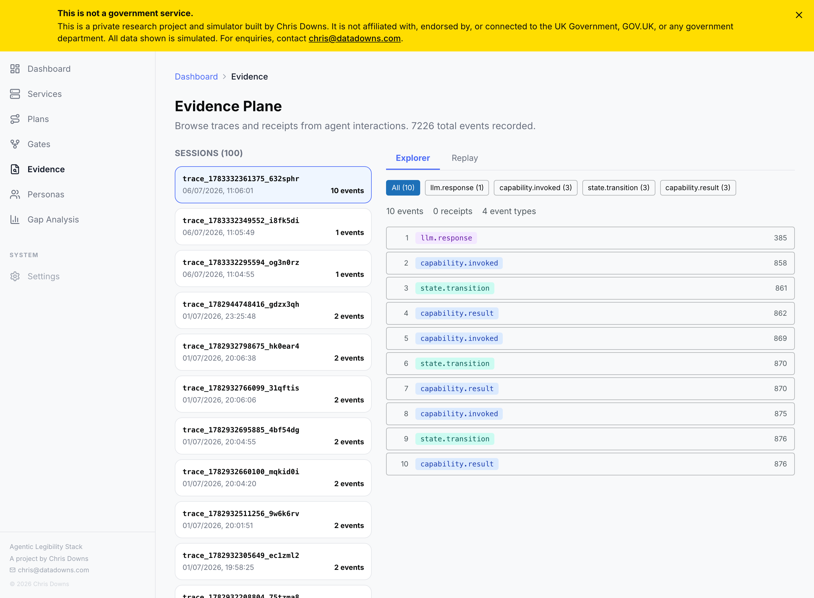
The department's side of the contract
For an agent to act on a service, the service has to be legible to it — its states, its rules, its capabilities published in a form an agent can read. The prototype's Legibility Studio is where a department does that work, and sees the gap: of 1,656 services catalogued, only a fraction carry the full artefacts an agent needs. Legibility is the work; the protocol is what makes it worth doing once.
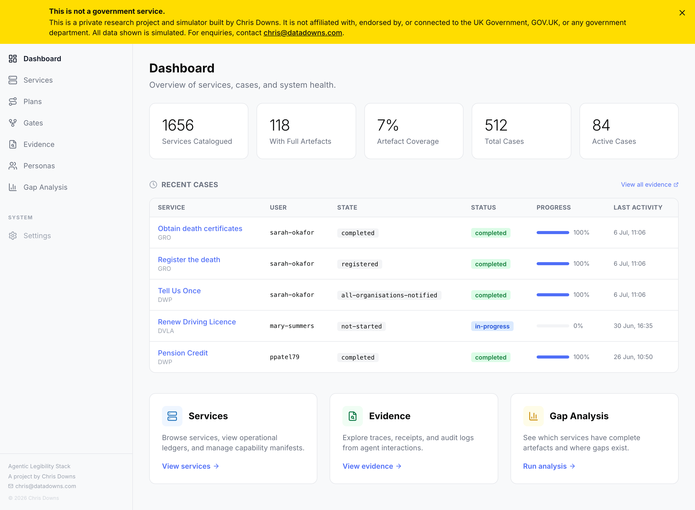
A short list of promises.
The real specification is for engineers to write. But in plain terms, this is what the protocol would have to guarantee — the load-bearing part of the whole idea, and the thing a protocol is uniquely able to scale.
Any agent that acts for me can prove who it is and who built it. No one is acted upon by an anonymous agent.
No agent can act for me without my permission — given for a specific purpose, narrowable, and withdrawable at any moment.
An agent only ever sees the data it needs, for the purpose I agreed, and nothing more.
Everything done in my name is recorded and explained in plain language. I can see its reasoning, question it, and have what it did undone — and no agent claims to know more than it can show.
Agents can work together on my behalf without my having to marshal them — one asks, the others help.
An agent that breaks these rules loses its right to act. Trust is granted, and it can be taken away.
Build to these rules and government will deal with your agent, on a citizen's behalf, whoever you are.
You declare what your agent is, what it may do, and where it must stop — and you answer for it.
You don't have to invent identity, consent, or hand-off. The protocol gives you those, so you can build the part only you can.
The model of the citizen belongs to the citizen — not to government. The live picture of your circumstances lives with the agent you chose, on your side of the line, inspectable and editable by you. Government keeps the rails; it does not keep the story of you.
A government agent may not optimise for engagement. No streaks, no hooks, no nudges designed to pull you back. Every message it sends is a cost drawn on your attention, and it has to justify it.
A working reference for exactly this kind of protocol already runs across the author's own agents — a validated envelope for how one agent identifies itself, proves whose behalf it acts on, and hands work to another. It is a sketch, not a standard. But it is proof that the load-bearing part is writable today.
Two small things, and one that costs nothing.
This isn't a request to build all of it. It was never the centre's job to build everything. But a deliberate, resourced decision to make government agent-ready starts here.
A sandbox
A safe place to build and test agents — open to people inside government and out — with realistic citizen personas on one side and simulated services on the other. Without it, no one can build a government agent, or learn how it fails before it touches a real person. This prototype is a first sketch of exactly that.
The start of a trust framework
Even just the question, taken seriously: what would an agent have to prove for government to let it act on a citizen's behalf? Start with one accredited agent doing one real thing, and the rest can follow.
A different question
Stop asking how far we can constrain this until we're comfortable. Start asking how much good we could do if we were brave enough to let it act — and careful enough to let it be wrong.
Not a system. A different relationship between a citizen and the state — one where you are no longer left to face the whole of government alone.